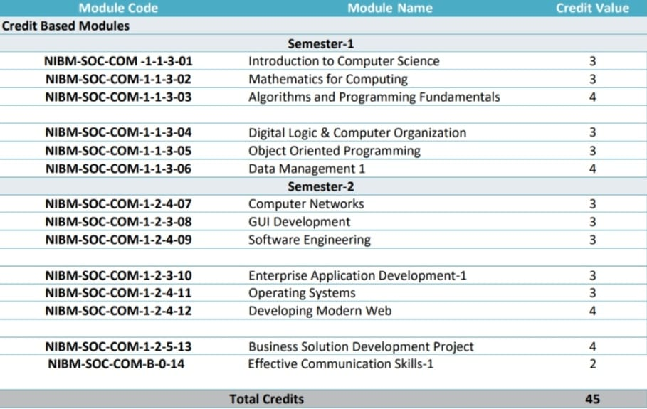
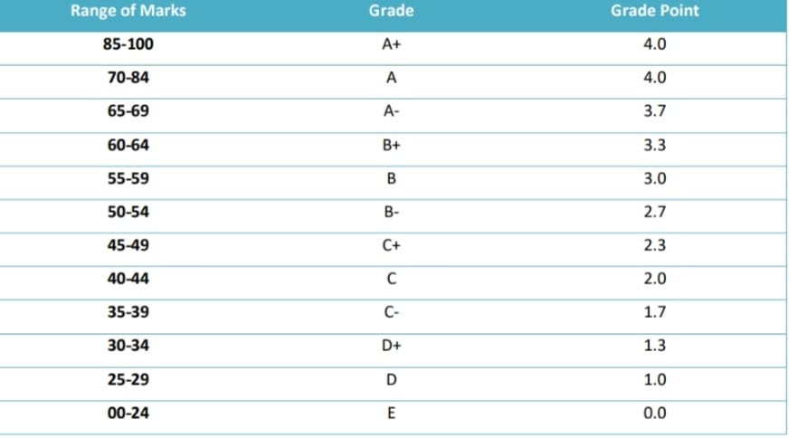
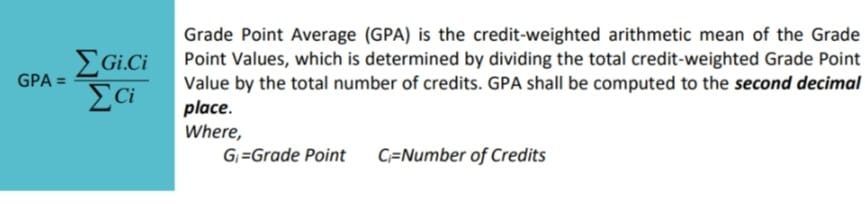
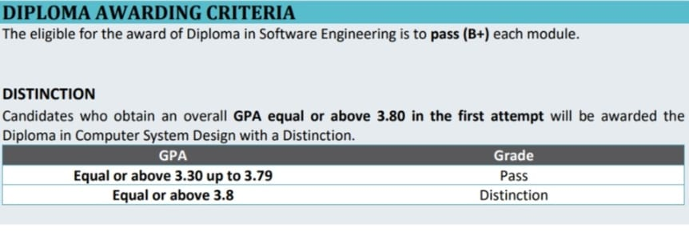

How It Works
The GPA calculator is designed according to the latest standards and regulations at NIBM for the
Diploma in Software Engineering (24.1F onwards).
Modules and Credits

Grading Criteria

Formula for Calculating the GPA

Diploma Awarding Criteria

New Rules and Regulations
- If a module has a final grade of B or below, it is calculated as 0.0
- The passing grade is B+
- Both the exam and coursework must have a grade of B+ or higher to pass
- If the final grade is higher than B+, but either the coursework or exam has a grade of B or B-, the module is still considered passed
- To progress to the Higher National Diploma (HND) in Software Engineering, a student’s current GPA must be 3.30 or higher at the time of application
GPA Calculator Functionality
The automatic GPA calculator instantly calculates a student’s current GPA when the student’s index number is entered.
Additionally, if a student wants to estimate their total GPA by including predicted grades for upcoming modules,
the manual GPA calculator can be used.